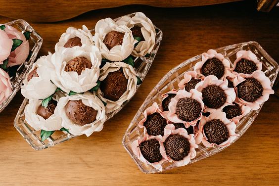

Para voltar para a página de detalhes, clique em detalhes das receitas.
Receita de brigadeiro simples

Imagem retirada do site Pexels
Ingredientes: 1 caixa ou lata de leite condensado. 2 ou 3 colheres de sobremesa de achocolatado em pó.
1 colher de manteiga(opicional)
Modo de preparo: Em uma panela coloque os ingredientes e misture em folgo médio até engrossar. Depois de
engrossar deixe esfriar e coloque em um prato ou em forminhas proprias para brigadeiro.
Tempo de preparo: 35 minutos.